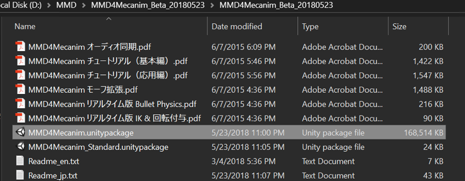
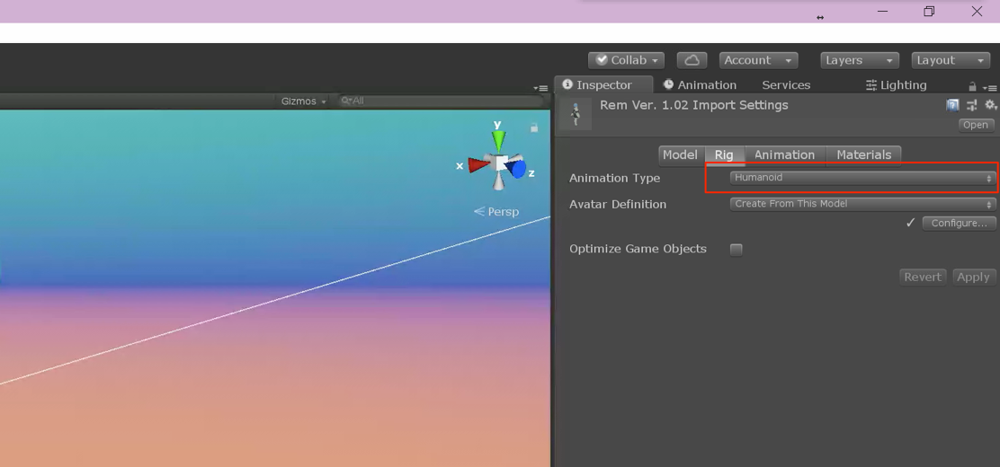

Most games, such as Action RPG, platform games, fighting games, include multiple characters or avatars in game for players to control. It is true that there are a lot of well made character models available in the Unity asset store, but free ones with high quality is rather rare.
To make our game vivid and fun, a good looking avatar can provide great advantages, since no one want to see boring soldiers running around for hours and hours, right? (Yeah, I am talking about you, free soldier asset featured in countless tutorials.)
However, designing a new Humanoid character from scratch using modeling softwares such as Maya or Blender for beginners like me is not actually realistic, since the process of systematically learning modeling, rigging and generate lightmaps etc. to create a appealing model is as difficult, if not harder, as making a good game.
Therefore, since I have messed around with MMD (MikuMikuDance) for some time when I was still in high school, I am kind of familiar with it. Anyway, such prior knowledge is not a must for taking advantage of the well-community-supported, open-sourced library of humanoid models.

In this note, I will elaborate the steps form obtaining .pmx model files to make the models moving in Unity editor.

Attention: If you want to attach some motion animations along with the model without the harassment for manually preparing an animator controller by yourself afterwards, you need to drag the .vmd file (Also available on that website.) to the VMD slot before pressing the “Process“ button.
Attention: If you want to attach some humanoid motion animations when messing around with the model, make sure the Animation Type under the Rig page of that model is changed to Humanoid. (It is set to Generic by default.) Or the humanoid motion clips you gathered from somewhere else won’t work on this model. I spent some time to figure this out when firstly using this plugin.

Now we can use the imported character to do different things and create kaleidoscopic games! Next time I will write about how to incorporate our own character in the newly released powerful Unity 3D Game Kit.